01
Общество и городская среда · событие дня
В стоимость за 999 рублей входит только ручная кладь (36×30×27 см), тариф невозвратный, багаж и выбор места оплачиваются отдельно.…
Потерпевшие выжили благодаря врачам, но не смогли опознать киллеров из-за масок. Недавно один из фигурантов сознался и сдал подельников.…
Для его создания Губернатор Алексей Русских добился поддержки нацпроекта «Продолжительная и активная жизнь», инициированного…
5 октября на заседании штаба по комплексному развитию региона Губернатору Алексею Русских доложили о…
За смену было снято 40% старой дорожной одежды, данная работа продолжится далее по ночам, чтобы не создавать заторов.…
Федоров заявил, что будет поднимать престиж вуза через работу и поддержку коллектива, без которой не пошел бы на выборы.…
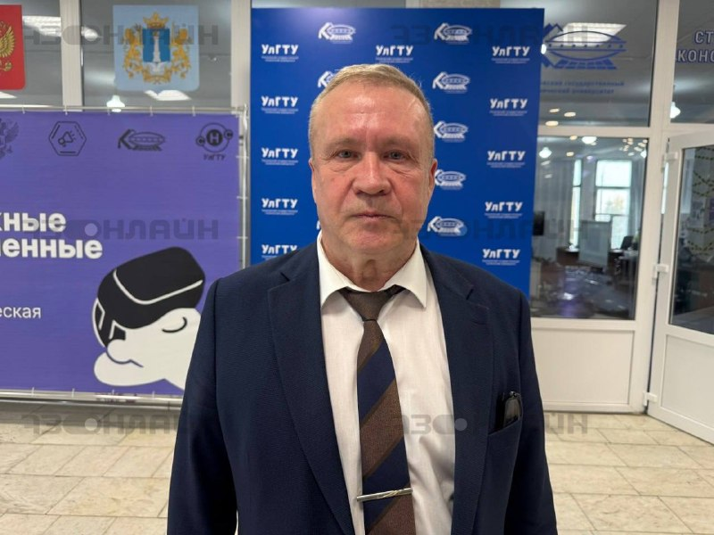
Глава Ульяновска Александр Болдакин отчитался перед губернатором Алексеем Русских за прошедшие пять лет и наметил планы на ближайшие годы.…
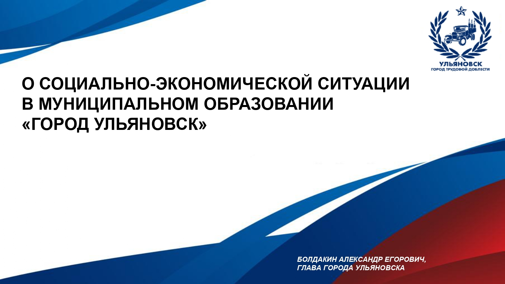
За последние пять лет уровень заработной платы работников крупных и средних предприятий Ульяновска увеличился почти вдвое: с 43 тысяч рублей до 81 тысячи рублей.…
По поручению главы областного центра Александра Болдакина в городе реализуются различные меры поддержки молодых педагогов, одним из них является муниципальный конкурс «Педагогический дебют», который стартовал в Губернаторском лицее №101.…
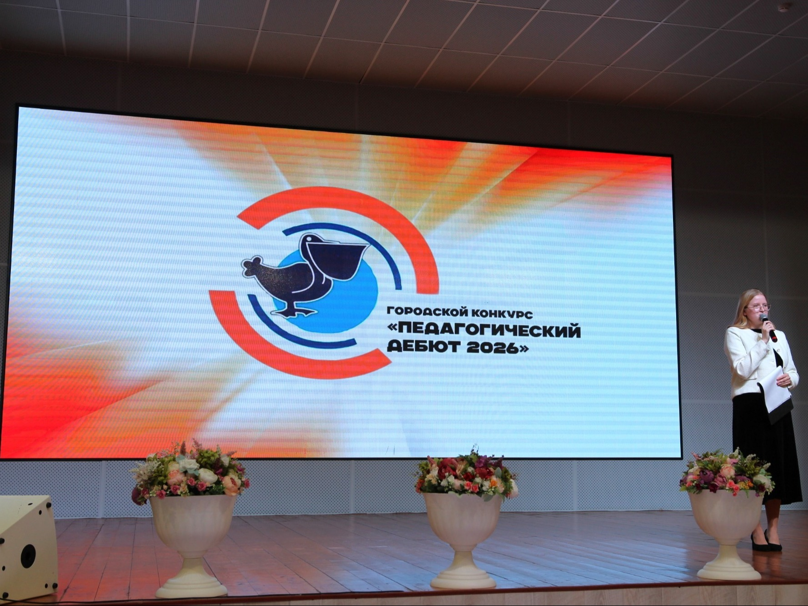
В стоимость за 999 рублей входит только ручная кладь (36×30×27 см), тариф невозвратный, багаж и выбор места оплачиваются отдельно.…
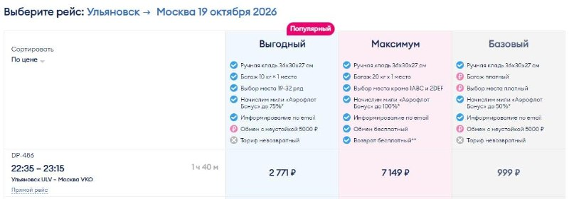
Вывоз твердых коммунальных отходов в Железнодорожном районе Ульяновска 6 октября осуществлялся в штатном режиме вопреки информации о прекращении работы перевозчика — об этом сообщил депутат Ульяновской Городской Думы Марат Бакеев по итогам заседания городского штаба.…

Результаты оказались любопытными: из 62 мэров, назначенных за последние шесть лет (без учета врио), средний срок пребывания в должности составляет 2,73 года.…
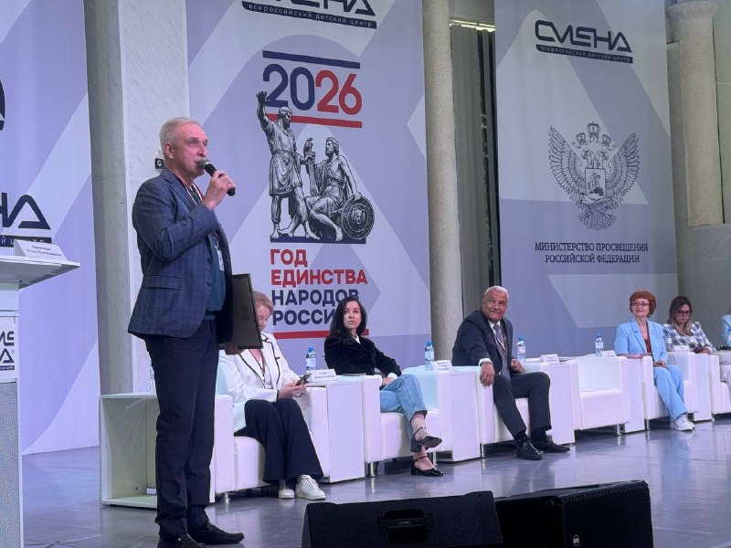
Говорили о гордости и мечтах… Первоначальная модель: Россия-мирная держава, с развитой промышленностью, сельским хозяйством, где хочется создавать семьи и рожать детей, заниматься спортом и дружить!…
Цель — наращивание промышленной кооперации.…
За это же время в городе появилось 60 тысяч новых рабочих мест.…
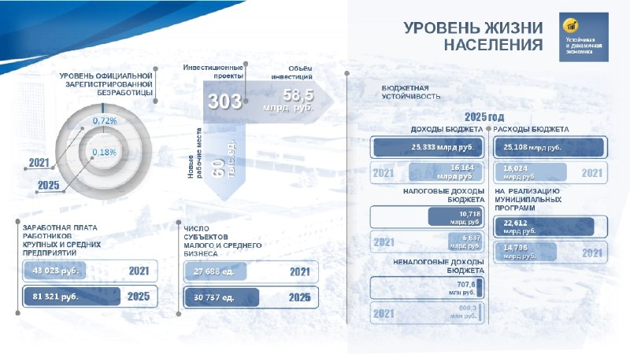
Доходы бюджета Ульяновска выросли с 16,1 до 25,3 млрд рублей, а налоговые поступления удвоились, достигнув 10,7 млрд рублей.…
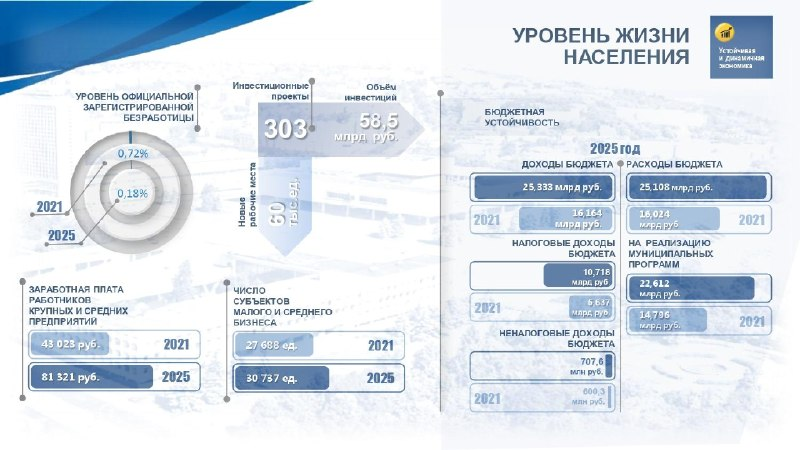
И эта цена, как уверяют продавцы, не окончательная. Ждут рост цены до 500 руб даже на сельдь.…
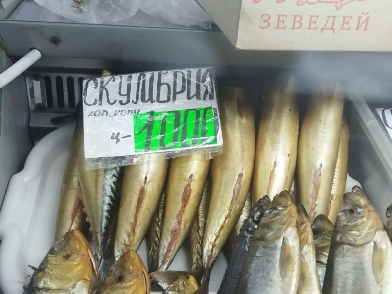
Товарооборот выстроят через Каспий и Персидский залив, сообщает центр развития бизнеса.…
Ульяновская область приступает к формированию прямых торгово-экономических связей с Бангладеш.…

Рост расходов эксперты связывают в том числе с подорожанием комплектующих и дефицитом мощных процессоров и памяти, пишет Forbes.…
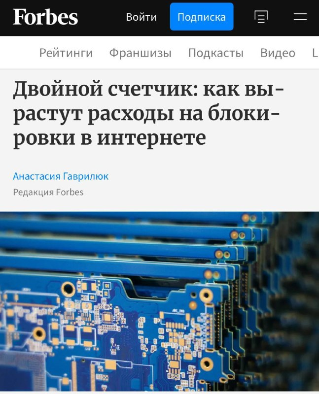
В ЦБ рассчитывают, что это поможет привлечь в российскую экономику до 1 трлн рублей из исламских стран.
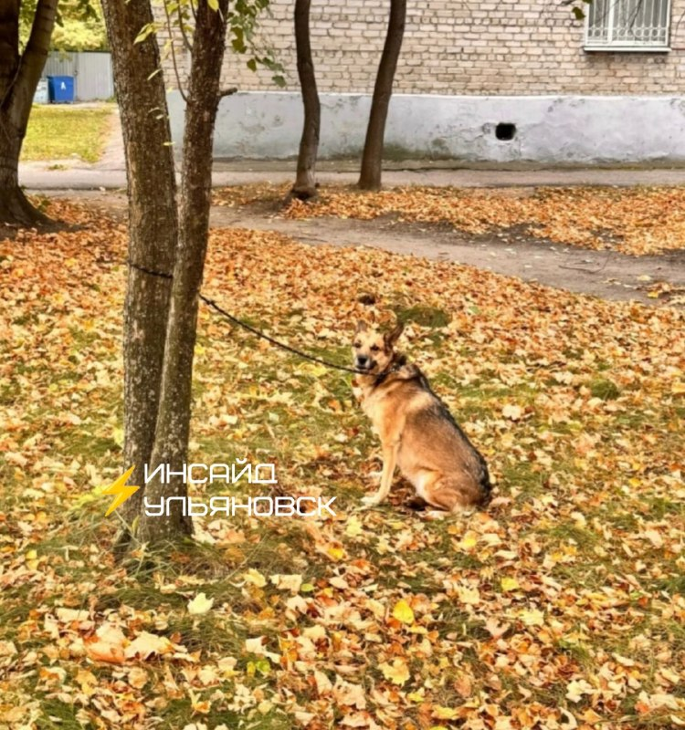
Вопросы развития службы медицинской реабилитации рассмотрели на заседании штаба по комплексному развитию региона под…
В Ульяновскую область поступила вторая партия противогриппозной вакцины — более 13 тысяч доз детского «Совигриппа», сообщает минздрав региона.…
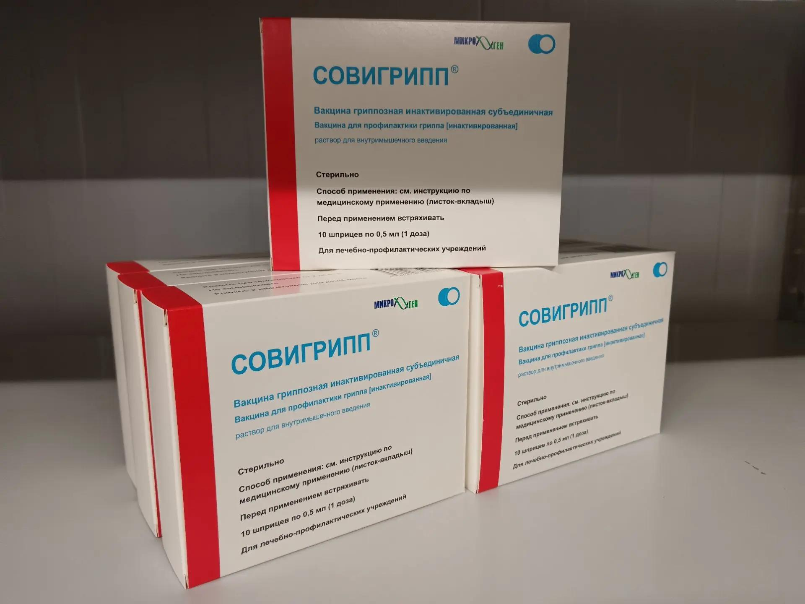
В Ульяновском областном центре специализированных видов медицинской помощи имени Чучкалова монтируют новое модульное приёмное отделение, сообщает минздрав.…
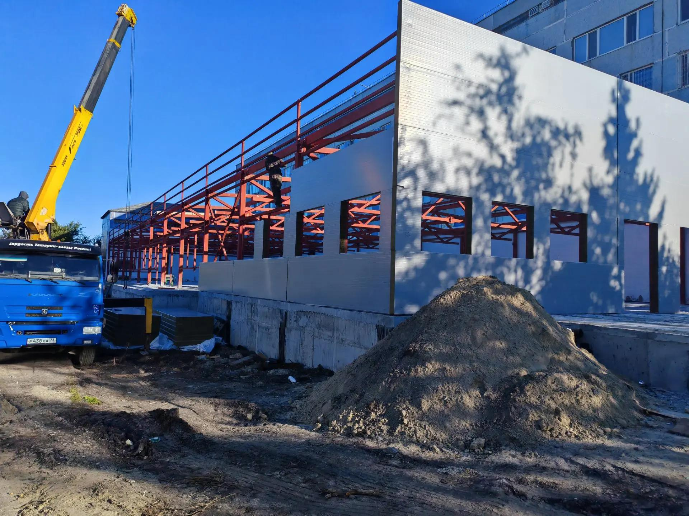
Потерпевшие выжили благодаря врачам, но не смогли опознать киллеров из-за масок.…
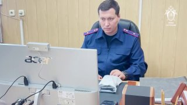
Еще пять высокотехнологичных комплексов поступили в Областную клиническую больницу, среди которых специализированный тренажер для подъема по лестнице и современная система электростимуляции, помогающая пациентам восстанавливать навыки ходьбы.…
Физкабинет, ЛФК, Дневной стационар!!!!! Люди мерзнут!!!! Пациенты болеют.
главного внештатного специалиста по инфекционным болезням Минздрава Ульяновской области Яна Саранская разъяснила, какие инфекционные угрозы требуют внимания в осенний сезон, а какие не должны вызывать панику.…
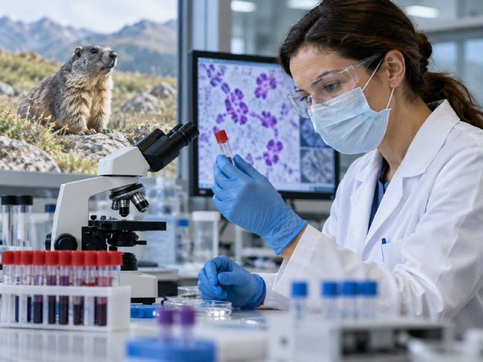
Облсуд отклонил жалобу больницы Мы в Telegram | Мы в…
Что есть, чтобы чувствовать себя сытым? Сколько воды нужно пить?…
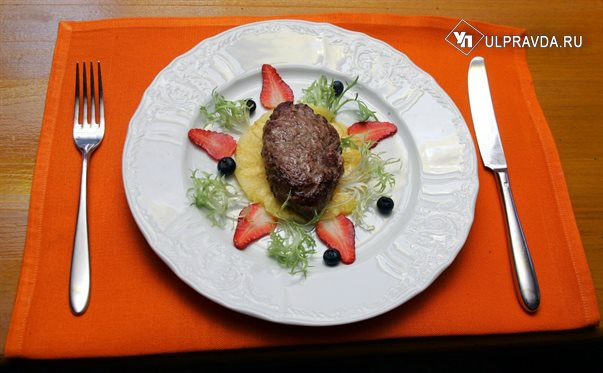
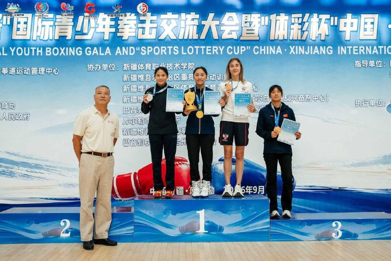
Бронзовыми призёрами стали Татьяна Константинова, Евгения Молочкова и Даниил Кравцов. Всего в соревнованиях участвовали 28 команд из 23 стран, включая призёров Олимпийских игр и чемпионатов мира.…
Ульяновский пауэрлифтёр Александр Шипчин занял первое место в троеборье в весовой категории 83 кг. Поздравляем!…
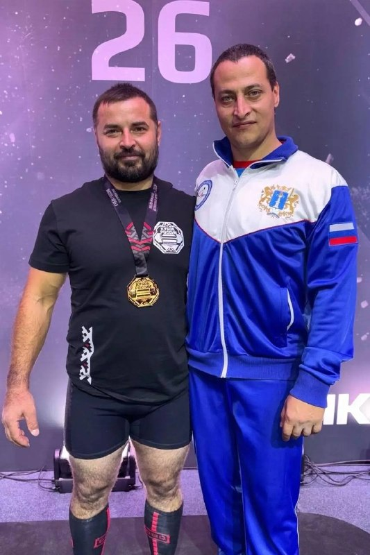
Награды завоевали Татьяна Константинова, Евгения Молочкова и Даниил Кравцов Мы в Telegram | Мы в…
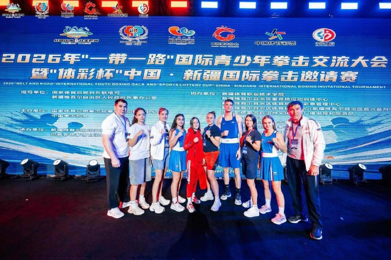
Ульяновские боксёры завоевали три бронзовые медали на международных соревнованиях International Boxing Training Camp & Competition, завершившихся 28 сентября в Китае, сообщает минспорт региона.…
Ульяновский пауэрлифтёр Александр Шипчин завоевал золотую медаль в троеборье в весовой категории до 83 кг.…
Наш спортсмен стал лучшим в троеборье в весовой категории до 83 кг. Сами соревнования проходили в Ноябрьске.
Объект уже готов, осталось завершить документальные процедуры.…
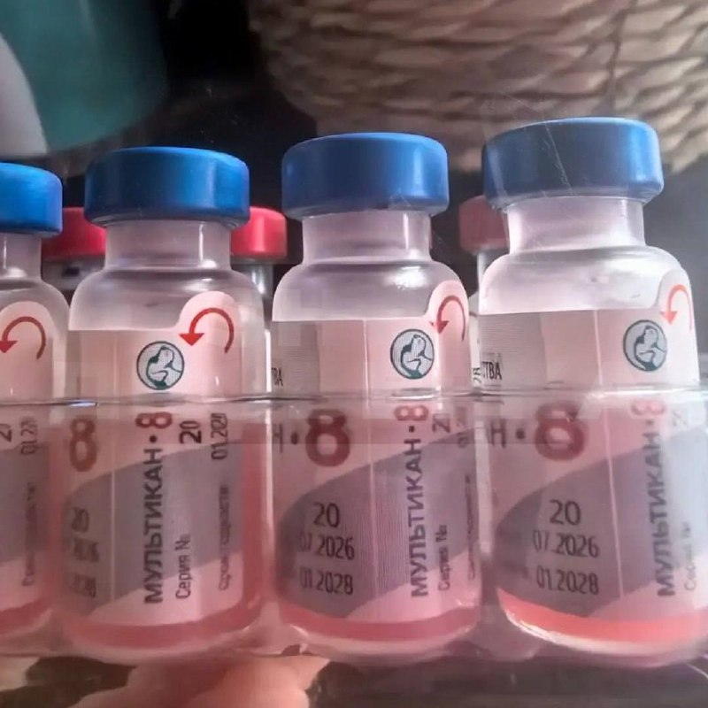
❌ Рейс «Победы» DP 465/466 (Ульяновск — Внуково и обратно) — полностью отменён в обоих направлениях.…
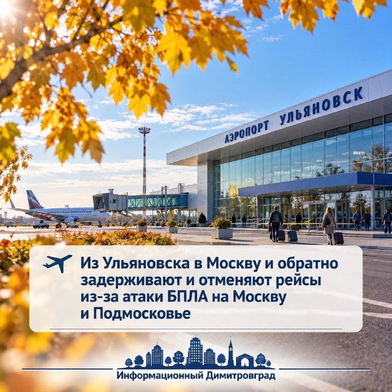
По версии следствия, в марте 2014 года обвиняемые решили устранить конкурентов в сфере пассажирских перевозок.…
Следственные органы предъявили официальное обвинение троим жителям Ульяновска в покушении на убийство двух лиц, совершенном организованной группой (ч.…
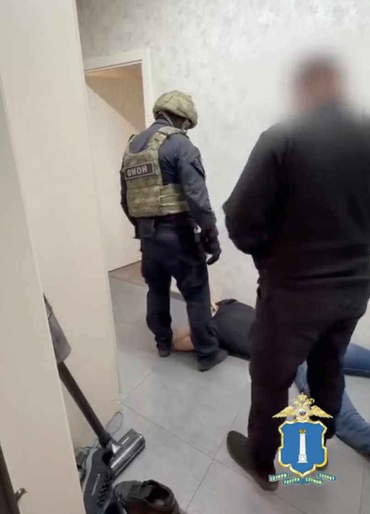
Нападавшие скрылись. По факту было возбуждено уголовное дело по статье «Покушение на убийство двух или более лиц».…
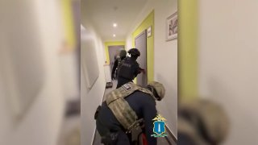

Возбуждено уголовное дело — прокуратура.
Речь идёт не о формальностях и не о «незначительных недочётах», а о возможных рисках для безопасности людей, окружающей застройки и самого Волжского склона.…
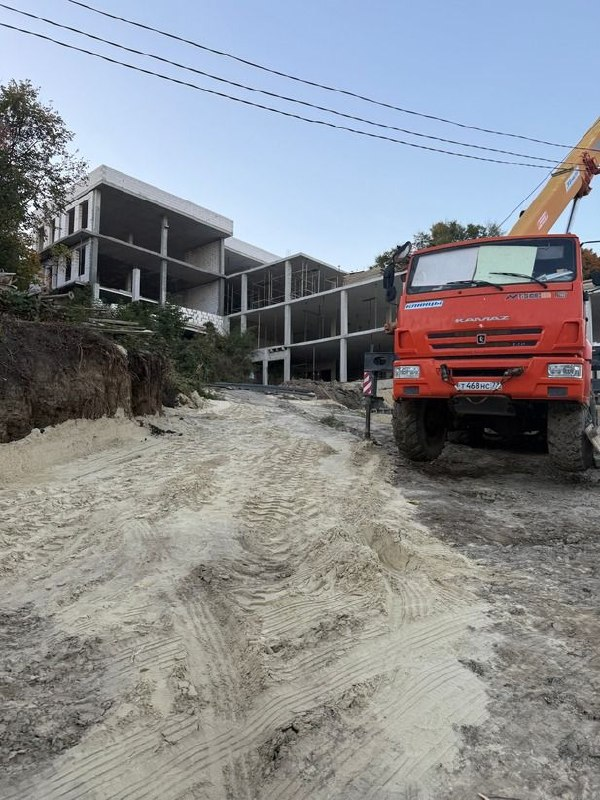
В повреждённых при атаке домах Ульяновска продолжают восстанавливать остекление.…

Сейчас гостей принимают 94 гостевых дома и загородных объекта, а в агротуризме задействованы около 400 фермерских хозяйств и экопарков. Там предлагают дегустации, мастер-классы и знакомство с сельхозпроизводством.…
Агротуризм в Ульяновской области ставит рекорды: в этом году зарегистрировано более 770 тысяч ночёвок в гостиницах, кемпингах и на турбазах, сообщает минсельхоз региона.…

Среди нарушителей — предприниматель из Чердаклинского района, задекларировавший ячмень без проверки.…
Так, пшеницу продают всего за 7–8 рублей за килограмм, а подсолнечник — за 19 рублей, хотя его себестоимость достигает 26 рублей.…
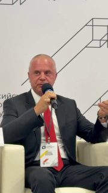
Его хозяйство (10 тыс. га) отдало банкам 70 млн рублей только на проценты.…
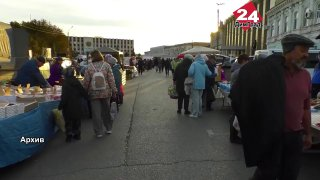
Регистрация участников доступна до 30 ноября на официальном сайте проекта: https://openbusiness73.ru/lp/open-business/predprinimatel-goda.…
Обращения принимаются Агентством государственного строительного и жилищного надзора региона до 20 октября включительно.…
Если это ваш питомец, звоните по номеру: 89053499348 (Вика). 💓 На втором и третьем снимках — Белочка.…
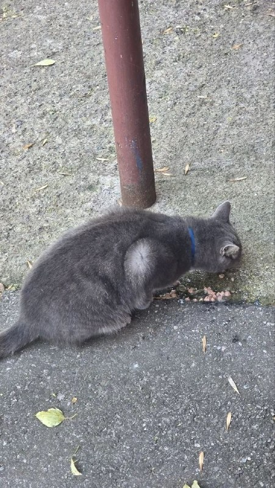
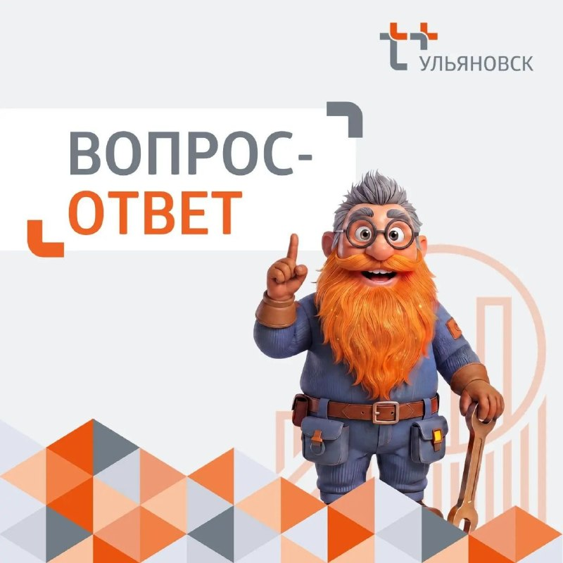
Новая музыка, новый вайб, новые шоу-моменты и атмосфера, которая будет меняться вместе с нашим маршрутом. Готовься.…
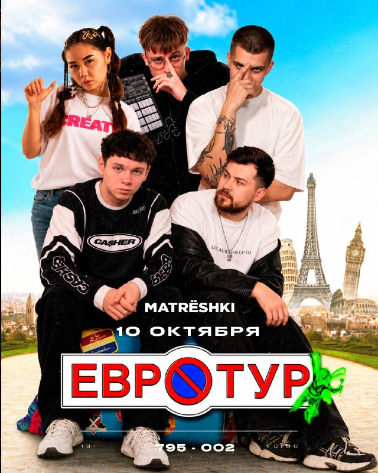
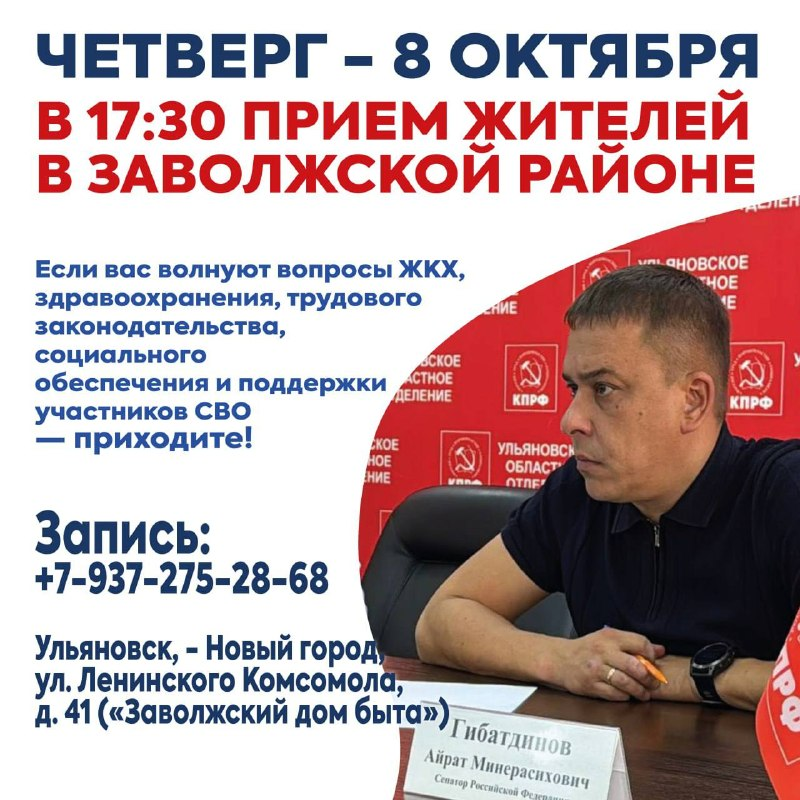
⚡️ Если правила изменятся — получится перестроить работу серверов и обходок так, чтобы Мост VPN продолжал работать максимально стабильно.…
Материалы Всероссийского просветительского проекта «Цифровой ликбез» будут доступны для всех желающих до 10 ноября…
Об организации занятости учащихся образовательных организаций доложили Губернатору Алексею Русских на заседании штаба по…
Ульяновская студия «АРТ-ПРОФИ» выпустила пять новых серий анимационного сериала «Улётная история».…
Им предстоит сконструировать, запрограммировать и спаять собственные проекты: умную ячейку для хранения смартфона, пункт выдачи заказов или эко-лампу.…
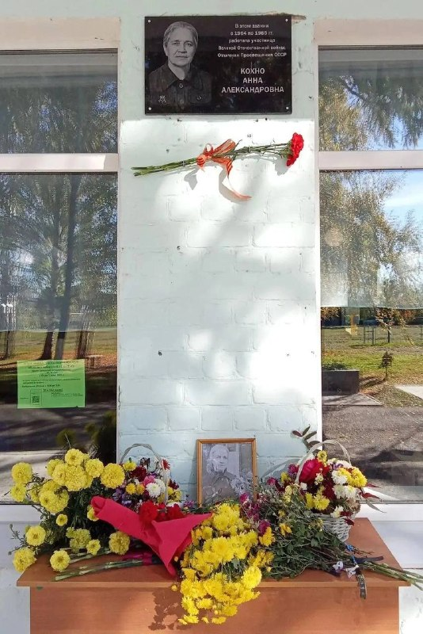
Получить стипендию могут студенты вузов, у которых есть план участия в развитии системы особо охраняемых природных территорий (ООПТ).…
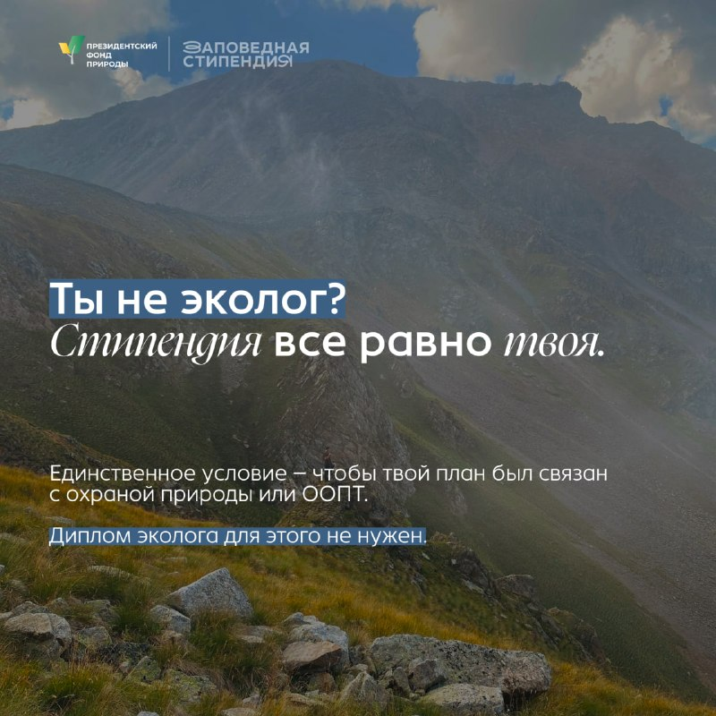
В селе Лаишевка установили знаки «Движение грузовых автомобилей запрещено» — они действуют на улицах Школьной и Пензенской.…
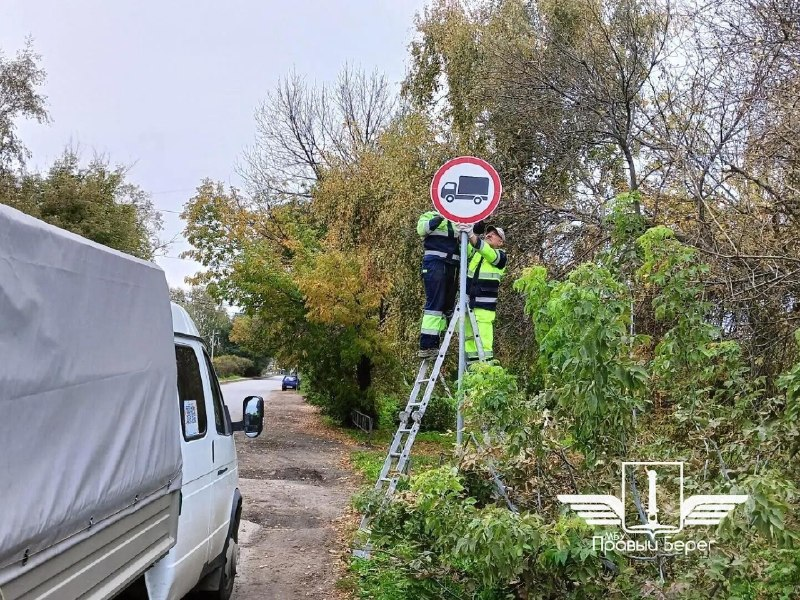
— Доктор медицинских наук, профессор, декан медицинского факультета Института медицины, экологии и физической культуры Ульяновского государственного университета Людмила Белова .……
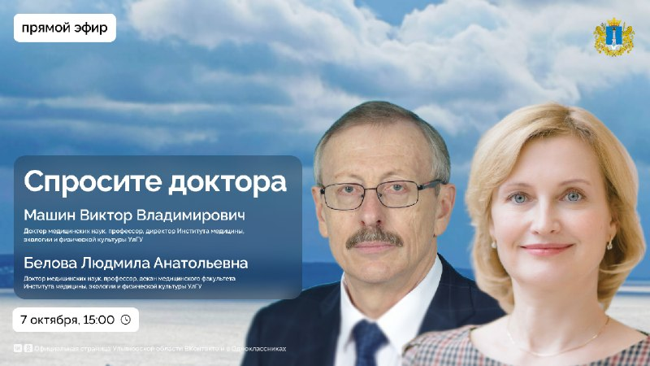
Легендарный охотник за головами Джон Рут по кличке Вешатель конвоирует заключенную. По пути к ним прибиваются еще несколько путешественников.…
| Тема | Завтра | Ожидание | Уверенность |
|---|---|---|---|
| БПЛА и воздушные угрозы | ↓ спад | ~3.7 упоминаний | средняя |
| Губернатор / власть | ↓ спад | ~26.1 упоминаний | средняя |
| Суды и криминал | ↓ спад | ~20.1 упоминаний | средняя |
| Транспорт и дороги | ↓ спад | ~30.9 упоминаний | средняя |
| ЖКХ, газ, тепло | ↑ рост | ~27.7 упоминаний | средняя |
| Школы и вузы | ↑ рост | ~37.0 упоминаний | средняя |